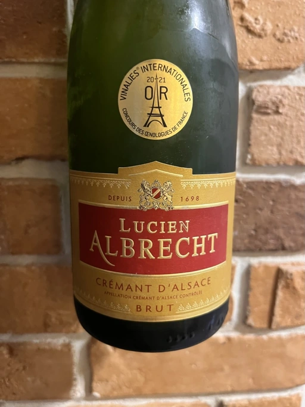

- Type
- White Sparkling, Brut
- Producer
- Lucien Albrecht
- Vintage
- NV
- Location
- France, Crémant d’Alsace AOC
- Grapes
- Auxerrois blanc, Pinot Blanc, Pinot Gris
- Alcohol
- 12
- Sugar
- NA
- Price
- 572 UAH
- Cellar
- N/A
Ratings
2022-08-22 - 7.40
Tasted blind. I guessed Crémant but didn’t guess the location. My bet was on Jura. Liquid cake - cream soda, baked pear, oil, honey. This sparkling is intense, with good volume and mousse. It’s like letting the ocean wave into your mouth. But instead of what you would expect from ocean water, the wine leaves a slightly bitter sensation with flavours of baked red apple (or rather, the skin of a baked red apple).